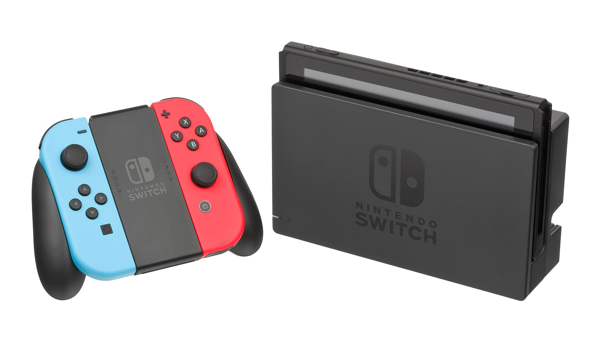

Latest from the bench: StreamGuard v0.3.3, a Twitch ad shield that runs in the browser.
What needs fixing?
Here's one from the bench. Pick the symptom closest to yours to see the others.
Selected work
Four jobs, in full. The short version is above; here's what was actually wrong.
StreamGuard
A Twitch ad shield that runs entirely in your browser.
Twitch stitches ads into the live HLS playlist, so a normal blocker can leave you staring at a black hole. StreamGuard hooks the player before it starts, reads the ad markers, and asks Twitch for a clean alternate feed. If every feed is ad-laden, it blanks the ad segments locally and keeps their audio and video out of the decoder. No proxy, no account, no telemetry.
The target, opened up. Switch teardown photo: PantheraLeo1359531, CC BY 4.0.
SVR 2011 on Switch
WWE SmackDown vs. Raw 2011, running natively. Not an emulator.
The Xbox 360 version's PowerPC code is statically recompiled to C++ with ReXGlue, then built for the Switch with devkitA64 and libnx. The first path ran through Mesa's NVK; the deko3d branch does the same 720p frame with less overhead. In-ring is 33–35 fps, menus are 60, and the public release is a source-only builder. You bring your own copy of the game.
After each lap, it compares you to your best lap of the session, finds where you lost time, and says it through your speakers. The model runs locally with Ollama; there is no account, API key or subscription. Without Ollama, the built-in template tips still work. The desktop app adds overlays, a track map and movable widgets; this repo is the free command-line coach.
“You're braking about eight metres early into Turn 4. Pick the throttle back up sooner.”
Best 1:32.204This lap 1:32.418
Local model · Ollama · no account
Example tip. Your lap times will differ.
Repair Bench
Ticket 1042
Waiting on parts
Customer
J. Rivera
Device
Switch OLED
Issue
No charge / USB-C port
Estimate
$85
Latest note
Port replaced. Battery holds. Running a 24-hour charge test before pickup.
Customer updated by text2:14 PM
Example work order. Names and devices are made up.
Repair Bench
Work orders for game console repair shops.
Tickets, customers, devices, photos, parts and invoices in one phone-friendly app. Each shop runs its own copy, with a customizable status workflow, before/after photo compare, low-stock flags, Stripe card payments and email or text updates. Built for the way a repair bench actually works, not the way a SaaS demo does.
A repair bench in the wild. Mine is less tidy. Photo: Wolfgang Stief, CC0.

The target hardware. Photo: Evan-Amos, public domain.
Repair work teaches a simple order: hear the symptom, reproduce it, find the actual fault, then write down what you did so the next person can follow it. I build software the same way.
That's why the README is part of the product. If you can't install it from the instructions, it isn't finished. StreamGuard ships with a full install and troubleshooting guide. SVR 2011 ships as a builder because the game's code isn't mine to distribute. Repair Bench ships with a setup script and a paste-the-SQL route for people who don't live in a terminal.
I like tools that are local-first, small enough to understand, and honest about their limits. No account if I can avoid it. No telemetry. If it needs a server, it should be your server.
I'm a vibecoder at the forefront, which is a fancy way of saying I use every tool available and then check the work. The bench keeps me honest: the console either boots or it doesn't.
Spaced Out
Vibecoder, repair technician, game enjoyer.
Current toolbox: TypeScript, Python, C++, Next.js, Supabase, Ollama, ReXGlue, and a soldering iron that has seen things.
Got something broken?
Tell me the symptom. I'll tell you if it's a software problem, a hardware problem, or a good excuse to take it apart.